Curarrehue · sector Pichicurarrehue
Cocina mapuche de la huerta a la mesa.
La cocina de Anita Epulef. Sólo con reserva.
- 203reseñas en Google
- 20años de cocina mapuche
- 1día de reserva previa
- 0páginas propias: sólo redes y fichas
Antes de sentarse
¿Qué hay en la mesa?
Cuatro nombres que se oyen en esta cocina.
- Ngülliw
Piñón
La semilla de la araucaria, cocida o en harina.
- Mültrün
Catuto
Pan alargado de trigo mote.
- Kako
Mote
Trigo pelado y cocido.
- Merkén
Ají ahumado
Molido con sus semillas.
Los nombres y su escritura los confirma la cocinera.
Lo que da la tierra, a la olla.
En Pichicurarrehue
Lo que ofrece la cocina
-
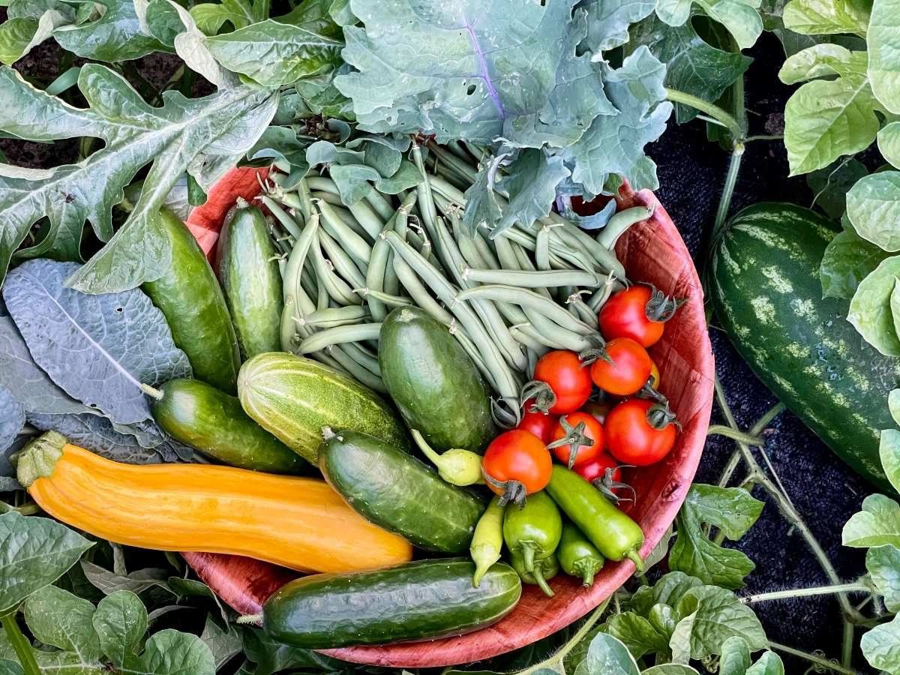
Al mediodía
Almuerzos
Con productos de su huerta.
-
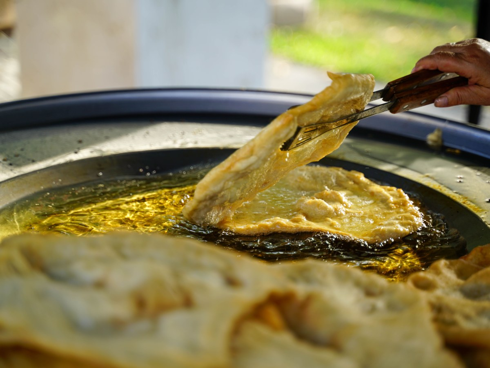
En la tarde
Onces
Para cerrar el paseo.
-
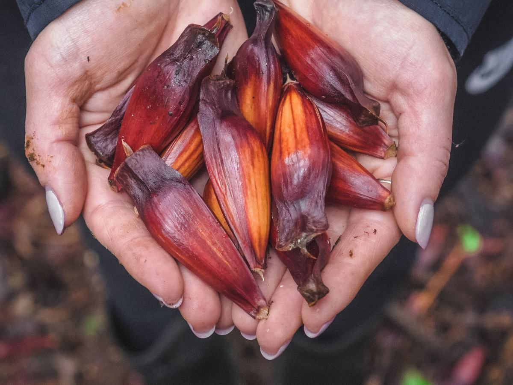
Para probar
Degustaciones
Sabores de la cocina mapuche.
-
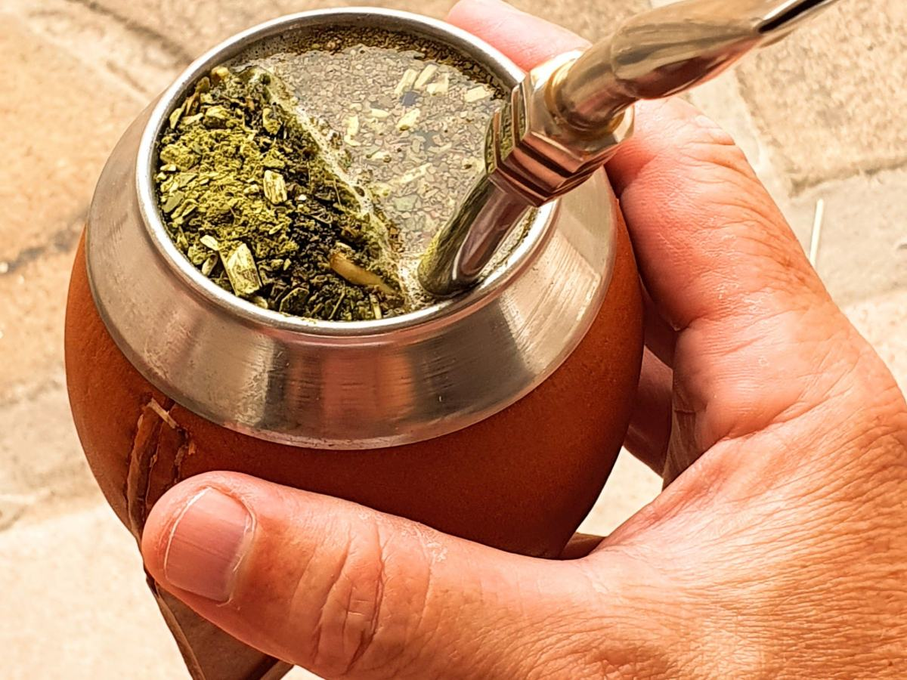
En ronda
Mateadas
Como se toma en el campo.
-
Junto al fuego
Charlas
Sobre la cosmovisión mapuche.
-
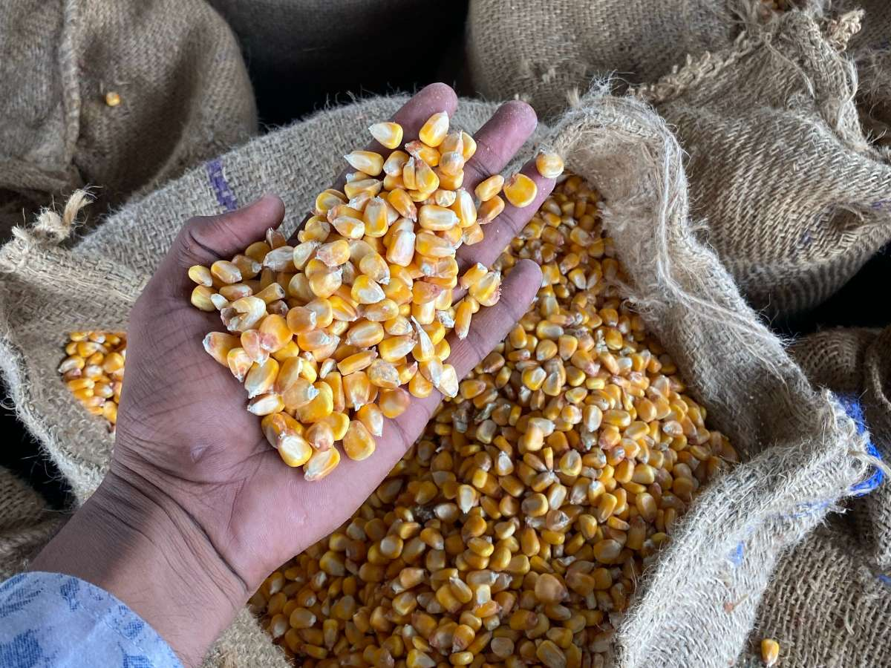
Con las manos
Talleres
Prácticas de cocina mapuche.
Almuerzos, onces, degustaciones, mateadas, charlas y talleres salen de sus fichas publicadas.
Más de veinte años de cocina mapuche.
Anita Epulef, en Curarrehue
Semilla, greda y fuego
Un almuerzo en Curarrehue
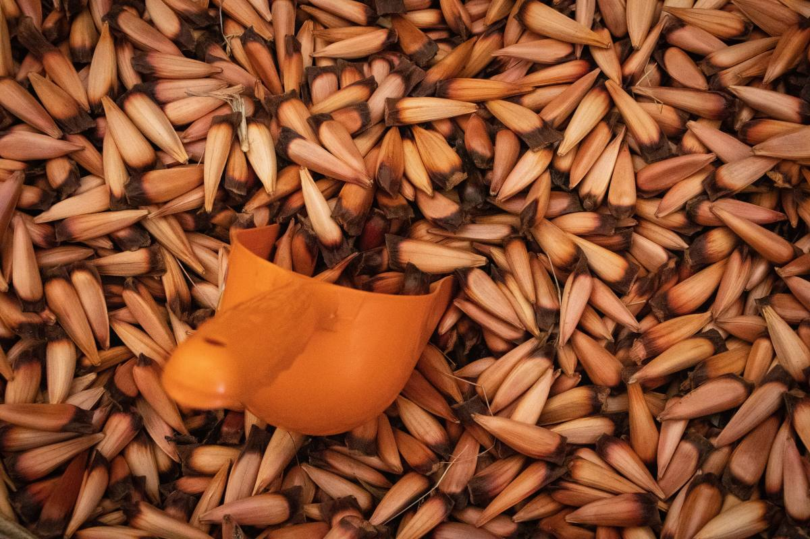
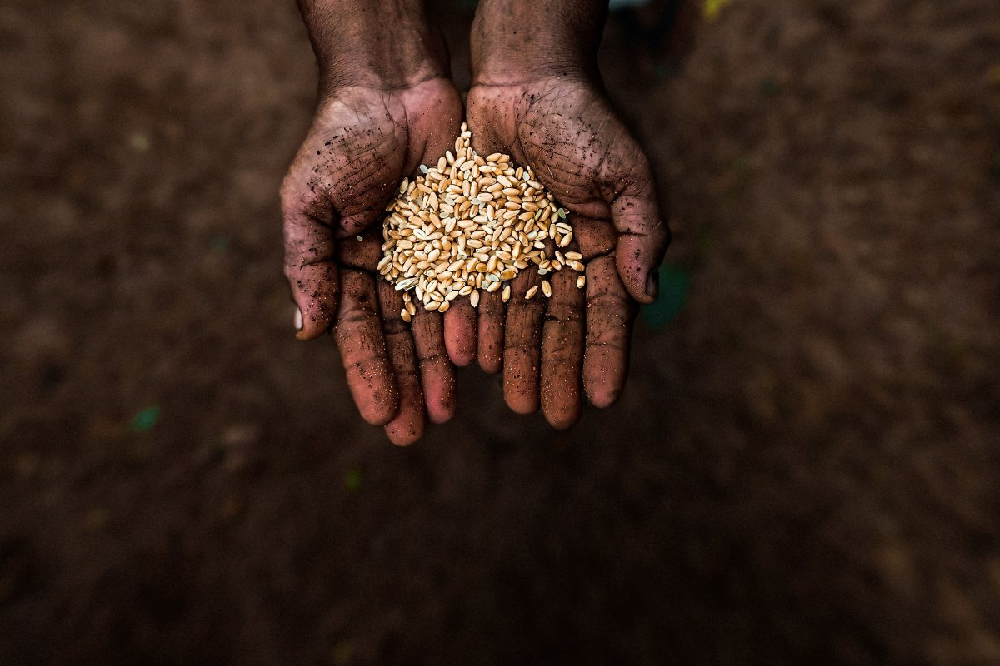
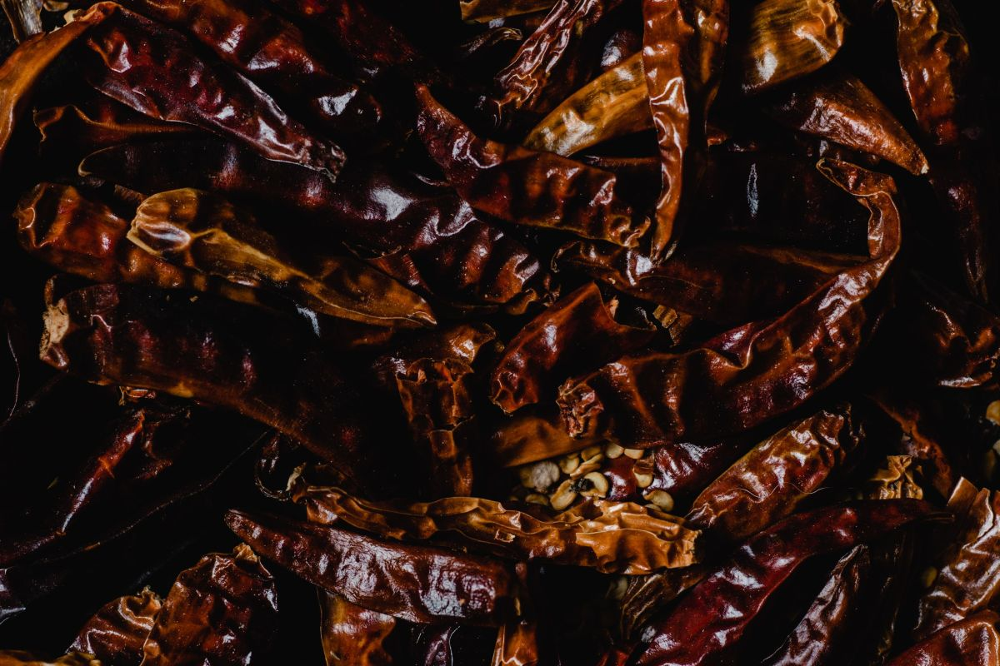
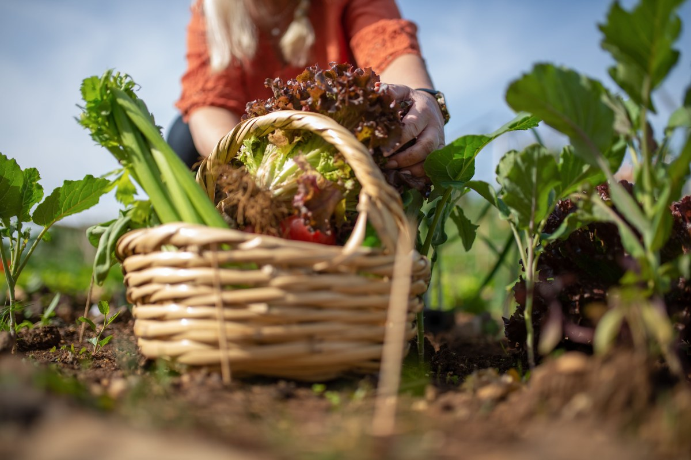
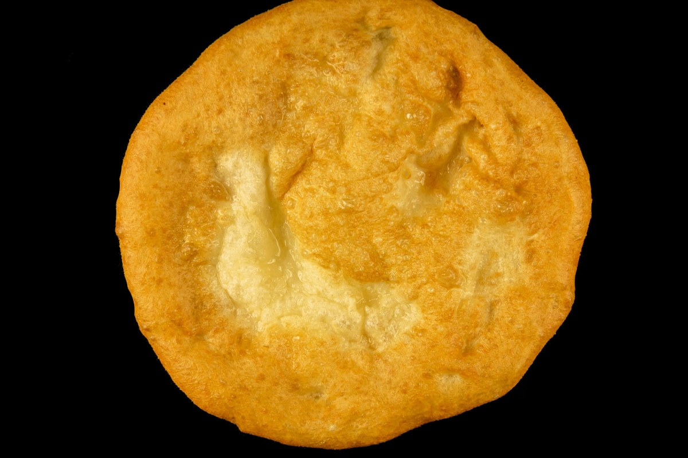
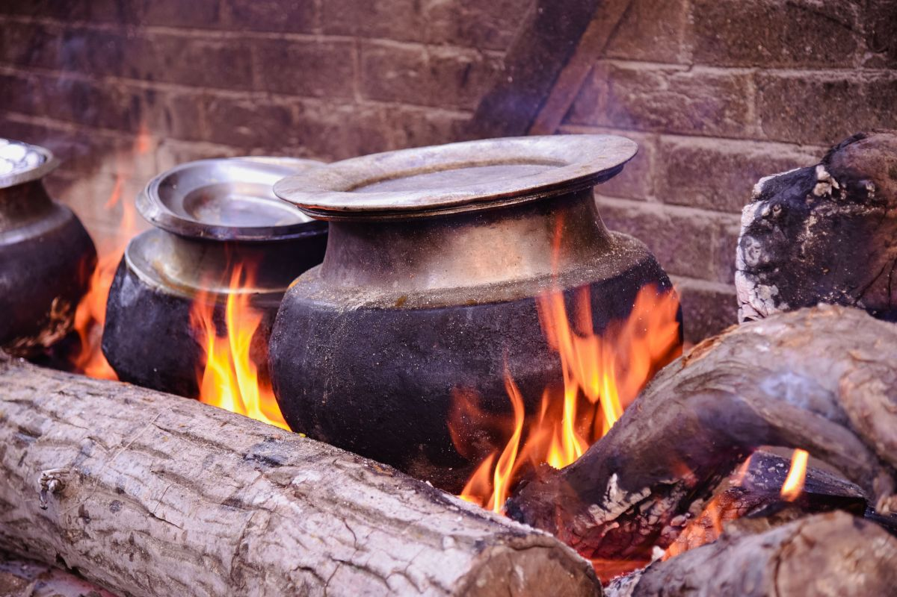
Fotos de referencia: los platos de verdad están en su Instagram.
Cómo llegar
Camino Internacional, Pichicurarrehue
- Ubicación
- Camino Internacional, sector Pichicurarrehue
- +56 9 7510 3816
- Horario
- Jueves a domingo, 13:30 a 17:00
- @cocinamapuchedeanitaepulef
Se atiende sólo con reserva, hecha al menos un día antes.
Pichicurarrehue, Curarrehue Abrir en Google Maps
Para Anita
Qué es real y qué falta
Lo verificado
Ubicación, WhatsApp, horario y reserva de Turismo Curarrehue, lo que ofrece la cocina y las 203 reseñas.
Lo de ejemplo
El glosario de la mesa y las fotos.
Lo que falta
Los platos de esta temporada, los valores y fotos de su cocina.